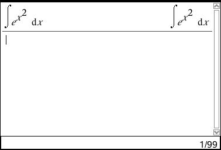

Dokumentet kan downloades som pdf
\[ {1 \over n} \to_{n \to \infty} 0 \]
Bestemmelse af e
\[ (1 + {1 \over n}^n) \to_{n \to \infty} e \]
Tangenten på en funktion der beskriver tid/distance, kan bruges til at finde hastigheden i præcis det punkt, hvor tangenten ligger.
v= hastighed \[ {\Delta S \over \Delta t} \to_{\Delta t \to 0} S'(t) = V(t) \]
\[ {\Delta S \over \Delta t} \to_{\Delta t \to 0} S'(t) = {ds \over dt} = {dx \over dy}\]
\[ {\Delta f \over \Delta x} \to_{\Delta x \to 0} f'(x) = {df \over dx} \]
\[ {{f(x) + \Delta x}) = f(x)} \over {\Delta x} \]
Eksempel:
\[ f(x) = x^2 \]
\[ f'(x) = { {{x + \Delta x}^2 - x^2} \over {\Delta x} } = { {x^2 + (\Delta x^2) +2x * \Delta x - x^2} \over {\Delta x} } \]
\[ \Delta x (\Delta x + 2x) \over \Delta x \]
\[ (\Delta x + 2x)\]
\[ (\Delta x + 2 \to_{\Delta x \to 0} 2x) \]
Eksempel:
\[ f(x) = {1 \over x} \]
\[ f'(x) = {{f(x+ \Delta x) - f(x)} \over { \Delta x}} = {{{x - (x+ \Delta x)} \over {(x+ \Delta x)*x}} \over \Delta x} = {{{- \Delta x} \over (x + \Delta x) * x} \over \Delta x} \]
\[ f(x) = a^x \]
\[ f'(x) = ln(a)*a^x \]
\[ f(x) = e^x \]
\[ f'(x) = e^x \]
\[ (x^a)' = ax^{a-1} \]
\[ e^{lnx} = x \]
\[ x^a = (e^{lnx})^a = e^{a*lnx} \]
\[ (x^a)' = (e^{a\*lnx}) = e^{a\*lnx} * a {1 \over x} = ax^a*{1 \over x^1} = ax^{a-1} \]
\[ h(x) = k*f(x) \]
\[ h'(x) = k*f'(x) \]
\[ H(x) = f(x) \pm g(x) \]
\[ h'(x) = f'(x) \pm g'(x) \]
\[ h(x) = f(x) * g(x) \]
\[ h'(x) = f'(x) * g(x) + f(x) * g'(x) \]
Bevis for at produktreglens funktion er kontinuer
\[ \Delta f = f(x + \Delta x) - f(x) \]
\[ \Delta f = {{\Delta f} \over {\Delta x}} * \Delta x \]
\[ f'(x) * 0 = 0 \]
\[ h(x) = f(x)/g(x) \]
\[ g(x) \neq 0 \]
\[ h'(x) = (f'(x)*g(x)-f(x)*g'(x))/g(x)^2) \]
sammensat funktion = composite function se 6.8, chain rule i “Essential Mathematic for Economic Analysis” side 187 \[ h(x) = f(g(x)) \] f(x) er ydre funktion g(x) er indre funktion \[ h'(x) = f'(g(x)) * g'(x) \]
Bevis:
\[ y = f(g(x)) \]
\[ test = { {f(g(x + \Delta x )) - f(g(x))} \over {\Delta x}} \]
\[ {{f(g(x) + \Delta g)} - f(g(x))} \over {\Delta x} \]
\[ f'(g(x)) * g'(x) \]
\[ {{ln(x + \Delta x) - lnx} \over {\Delta x}} = {{ln({{x + \Delta x} \over {x}})} \over {\Delta x}} = {{ln({x \over x} + {\Delta x \over x}) - ln1} \over {\Delta x}} \]
Divider delta x med x og gang det med x, for at matche det i overdelen af ligningen \[ {{ln({x \over x} + {\Delta x \over x}) - ln1} \over {\Delta x \over x } * x } = {1 \over x}\]
Eks.:
\[ y= ax+b \]
Givet punkterne (1,1) og funktionen x^2 \[ y = f'(x) + b \] \[ f'(x_0) = {{y-f(x_0)} \over {x-x_0}} \] \[ f(x) = x^2 \] \[ t(x) = 2x+b \]
b kan herefter udregnes ved hjælp af et givent punkt.
\[ y-f(x_0) = f'(x_0)(x-x_0) \]
Formel: \[y = ax+b\]
\[a = { \Delta y \over \Delta x }\]
Ligefrem proportionalitet \[y = kx\]
Omvendt proportionalitet \[y ={k \over x}\]
e.g. cykelpumpe \[p * v = k\]
Formel: \[y = ba^x\]
Hvis man kender to punkter, eks. (3, 2), (24,5)
\[ 24 = ( b * a^5) \] \[ 3 = ( b * a^2) \] \[ {24 \over 3} = {b\*a^5 \over b\*a^2} \]
\[ {24 \over 3} = {a^5 \over a^2} \]
\[ a = (\sqrt[5-2] {24 \over 3}) \]
Formel \[ y = e^x \]
Bevis:
\[ {{\Delta y} \over {\Delta x}} = {{e^{x+ \Delta x} - e^x} \over \Delta x} = {{e^x * e^{\Delta x} - e^x} \over {\Delta x}} \] \[ e^x {{e^{\Delta x} -1 } \over {\Delta x}} = e^x {{e^{0 + \Delta x} e^0 } \over {\Delta x}} \]
Vi ved: \[ {{e^{0 + \Delta x} e^0 } \over {\Delta x}} = 1 \]
Derfor er \[ (e^x)' = e^x \]
Derudover:
\[ e^{lna*x} = (e^{lna})^x = a^x \]
\[ y=b(1+r)^x \]
\[ y = b*2^{x \over T_2} \]
Formel: \[y = bx^a\]
\[(1+rx)^a = (1+ry)\]
ln != log
log() bruger 10-tals-systemet \[ y = a*ln(x) \]
\[ ln2 = ln(2) \approx 0,69314 \] \[ ln3 = ln(3) \approx 1,09861 \] \[ ln6 = ln(6) \approx 1,79176 \]
eks.
\[ f(x) = e^x \] \[ f^{-1}(x) = ln(x) \]
\[ ln(x) = 0 -> e^0 = 1 \] (man kan ligge resultaterne sammen og få produktet af dem)
bevis \[ e^{ln(a*b)} = e^{lna+lnb} \]
\[ e^{ln{a \over b}} = e^{lna - lnb} \]
\[ a*b = e^{lna} * e^{lnb} \]
Det kan ofte være nyttigt at kombinere flere funktioner, f.eks.:
\[ f(x) = x^2 \] \[ g(x) = \sqrt x - 23 \]
De kan herefter kombineres, f.eks.:
\[ f(g(x)) = (\sqrt x - 23)^2 \] eller \[ g(f(x)) = \sqrt ( x^2 ) - 23 \]
% Integralregning % Kristian Øllegaard % 12-07-2012
Består af stamfunktioner, summer og sandsynlighedsregning.
En stamfunktion er at gå baglæns ifht. differentiering.
\[ f(x) = 2x \]
Stamfunktion til f = F
\[ F'(x) = f(x) \]
\[ F(x) = x^2 + k \]
Idet man kan tilføje en hvilkensomhelst konstant til en given stamfunktion, er det ikke kun een stamfunktion, men uendeligt mange.
\[ g(x) = x^3 \]
\[ G(x) = {1 \over 4}x^4 + k \]
| f(x) | F(x) |
|---|---|
| \[x^7\] | \[1/8x^8 + k\] |
| \[5x^{10}\] | \[{5 \over 11}x^{11} + k \] |
| \[3x^2+2x-8\] | \[ x^3 + x^2 -8x +k\] |
| \[1/x\] | \[ lnx + k \] |
| \[e^x\] | \[ e^x + k \] |
| \[e^(5x)\] | \[ {1 \over 5}e^{5x} + k \] |
| \[3^x\] | \[ {1 \over ln3} * 3^x + k \] |
| \[-(1/x^2)\] | \[ {1 \over x} + k \] |
Eksempel: \[ f(x) = 2x \] \[ F(x) = \int 2x \space dx = x^2 + k \]
\[ (\int{f(x) \space dx})' = f(x) \]
\[ \int{f(x) + g(x)}dx = \int{f(x)dx} + \int{g(x)dx} \]
\[ \int{k * g(x)}dx = k * \int{g(x)dx} \]
\[ \int x^a \space dx = {1 \over {a+1}}x^{a+1}+k \] eller \[ \int a^x dx = {1 \over lna}a^x+k = {a^x \over lna} +k \]
Screenshot af integralregning på TI-nspire CAS
Kan ikke udtrykkes, derfor skriver lommeregneren flg.: 
Ved et givet punkt (2,8) \[ f(x) = 2x \] \[ F(x) = x^2+k \] \[ 8 = 2^2 + k \] \[ k = 4 \] \[ F(x) = x^2+4 \]
Husk at sørge for ‘k’ bliver husket i hvert led.
\[ f(x) \] \[ F(x)' = f(x) \] \[ G(x)' = f(x) \]
\[ F(x)-G(x) = k \] \[ F(x) = G(x) + k \]
Bevis:
\[ ({F(x)-G(x)})' = F'(x) - G'(x) = f(x)-f(x) = 0 \] Derfor \[ F(x) - G(x) = k \]
t = tid
s = strækning
v = hastighed
a = acceleration
\[ s'(t) = v = 3 \] \[ f'(x) = 3 \] \[ f(x) = 3x + k \] \[ s(t) = 3t + k \]
\[ s(t) \] \[ s'(t) = v(t) \] \[ v'(t) = a(t) \]
\[ A(b) = F(b) - F(a) = \int^b_a f(x) dx = [F(x)]^b_a=F(b)-F(A) \]
Eks. Areal af f(x) = x^2 i intervallet [0;1] \[ \int^1_0 x^2 \space dx = [{1 \over 3}x^3] = {1 \over 3}\*1^3-{1 \over 3}\*0^3={1 \over 3} \]
Eks. på ti-nspire
Ovenstående på TI-nspire CAS
\[ O(x) = f(x_1) \Delta x + f(x_2) \Delta x … f(x_n) \Delta x = \sum_{i=1}^5 \space f(x_i) \Delta x \]
\[ U(x) = \]
\[ M(x) = \]
\[ U(x) \leq A \leq O(x) \]
\[ O-U \to_{\Delta x \to 0} 0 \]
\[ areal = f(b)-f(a) \Delta x \]
\[ \sum^\infty\_{i=1} f(t_i) \Delta x \to\_{x \to 0} \int^b\_a f(x) \space dx \]
\[ a= \frac{\Delta x}{\Delta y} \]
\[ y = \frac{r}{h}x \]
\[ \int^h_0 \pi (\frac{r}{h}x)^2 dx = \pi \frac{r^2}{h^2} \int^h_0 x^2 dx = \left[\frac{1}{3}x^3\right]^h_0 * \pi \frac{r^2}{h^2} = \frac{1}{3} \pi \frac{r^2}{h^2} + 0 = \frac{1}{3}h \pi * r^2 \]
N = Naturlige tal {1, 2, 3, …}
N0 = Naturlige tal, samt 0 {0, 1, 2, 3, …}
Z = Hele tal {…, -3, -2, -1, 0, 1, …}
Q = Rationale tal (brøker) - “Ratio”, eng.
R = Reelle tal